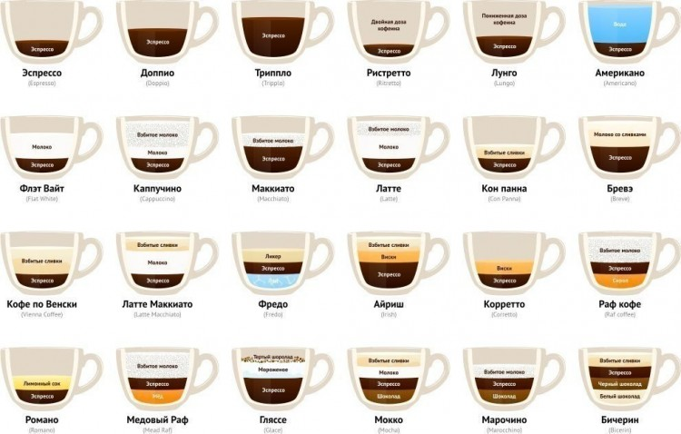

У каждого есть свой любимый напиток. Кто-то обожает шапку мороженого на глясе, а кто-то - аромат корицы на своем капучино. Мир кофе
многообразен, тут каждому найдется напиток по душе, для любителей покрепче – ристретто, более мягкий кофе – пожалуйста, американо. Хотите
расслабиться после работы? Ирландский.
Основа всего этого многообразия – эспрессо. Маленькая чашечка кофе, приготовленного особым способом:
через кофе тонкого помола пропускают под давлением воду температурой 90 градусов. Кофе – 1 столовая ложка, воды – одна рюмка. Получается бодрящий и
крепкий напиток. Кто-то любит пить его сам по себе. Кто-то добавляет немножко виски или лимонного сока, а кто-то молоко, шоколад, мороженое и много
других вкусных вещей. Конечно, можно долго рассказывать, но если требуется общее представление о рецептах приготовления кофе - вам сюда =)